Chapter 9 Optimizing ggplot presentation
- Goals for today’s class:
- Optimizing ggplot presentation for each of the plot types (bar charts, box and whiskers, scatter plot)
- Other graph specifications (themes, axes, font size, etc.)
9.2 Bar charts
Prepare variables (Asian Barometer)
- Independent variable: Views toward the US
- 175 Does the United States do more good or harm to Asia?
- Dependent variable: Views toward democracy (1 strongly agree - 4 strongly disagree)
- 170 Democratic systems are not effective at maintaining order and stability
Basic plot
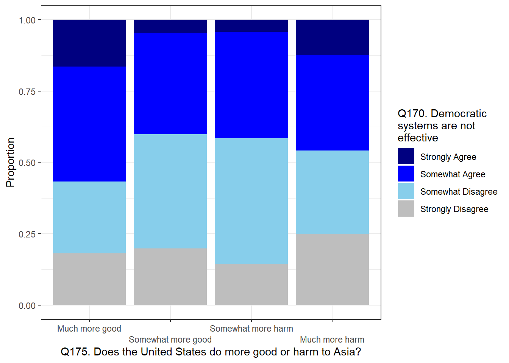
theme_bw()– changes the background themescale_fill_manual–nameto label legend title,valuesto change colors,labelsto change name of levelsscale_x_discrete– adjusts x-axis;labelsto change name of levels;guideto stagger labels to prevent overlappingxlab– x-axis titleylab– y-axis titlegeom_text– adds text annotation
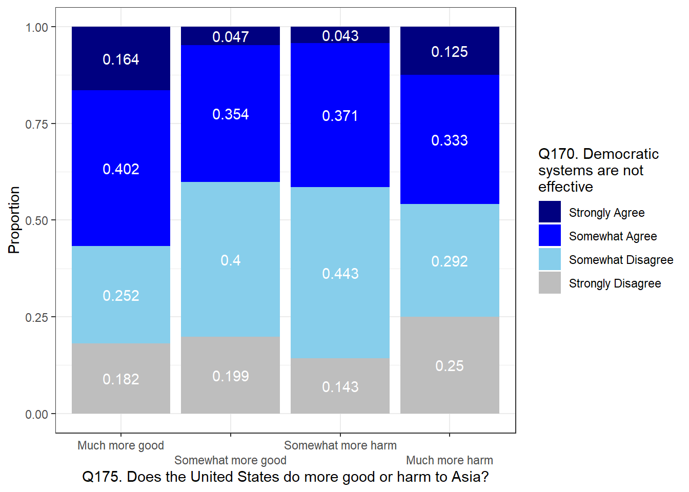
df_recode |>
ggplot(aes(fill=factor(q170),x=factor(q175))) +
geom_bar(position="fill") +
theme_bw() +
scale_fill_manual(name="Q170. Democratic\nsystems are not\neffective", #legend label; `\n` breaks line
values = c("navyblue","blue","skyblue","grey"), #color specification
labels = c("Strongly Agree","Somewhat Agree", "Somewhat Disagree", "Strongly Disagree")) #legend specification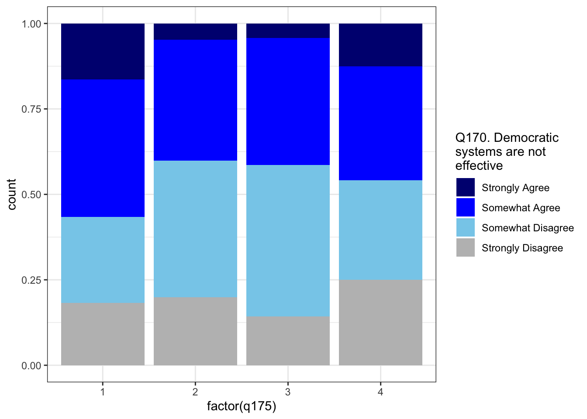
df_recode |>
ggplot(aes(fill=factor(q170),x=factor(q175))) +
geom_bar(position="fill") +
theme_bw() +
scale_fill_manual(name="Q170. Democratic\nsystems are not\neffective", #legend label; `\n` breaks line
values = c("navyblue","blue","skyblue","grey"), #color specification
labels = c("Strongly Agree","Somewhat Agree", "Somewhat Disagree", "Strongly Disagree")) + #legend specification
scale_x_discrete(labels=c("Much more good", "Somewhat more good", "Somewhat more harm", "Much more harm"),
guide = guide_axis(n.dodge=2)) +
xlab("Q175. Does the United States do more good or harm to Asia?") +
ylab("Proportion")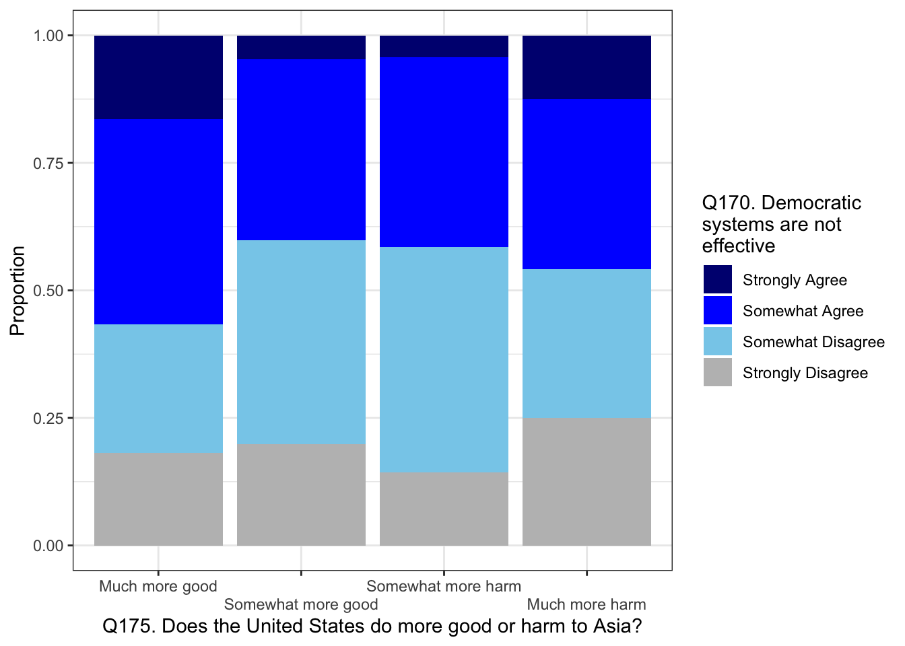
df_recode |>
ggplot(aes(fill=factor(q170),x=factor(q175))) +
geom_bar(position="fill") +
theme_bw() +
scale_fill_manual(name="Q170. Democratic\nsystems are not\neffective", #legend label; `\n` breaks line
values = c("navyblue","blue","skyblue","grey"), #color specification
labels = c("Strongly Agree","Somewhat Agree", "Somewhat Disagree", "Strongly Disagree")) + #legend specification
scale_x_discrete(labels=c("Much more good", "Somewhat more good", "Somewhat more harm", "Much more harm"),
guide = guide_axis(n.dodge=2)) +
xlab("Q175. Does the United States do more good or harm to Asia?") +
ylab("Proportion") +
geom_text(aes(x = factor(q175), # position along x axis follows q175
label = round(after_stat(count / tapply(count, x, sum)[x]),3)), # text
stat = "count",
position = position_fill(vjust = .5), # position text at center of each fill block
color="white")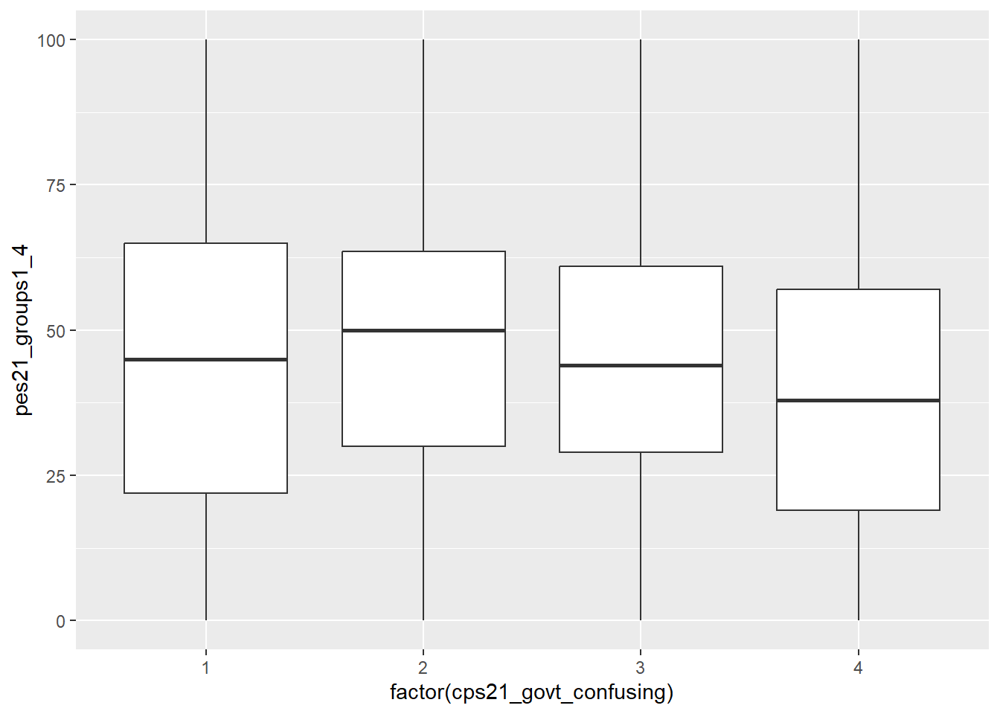
9.3 Box and whiskers plot
Prepare variables (CES)
vars <- c("pes21_groups1_4","cps21_news_cons","cps21_govt_confusing") #news consumption and internal political efficacy
ces_select <- read_dta("Project/CES2021/2021 Canadian Election Study v2.0.dta") |>
dplyr::select(all_of(vars))
ces_dropna <- ces_select |>
mutate(cps21_govt_confusing=ifelse(cps21_govt_confusing==5, #conditional statement
NA, #if yes
cps21_govt_confusing), #if no
cps21_news_cons=ifelse(cps21_news_cons==7, #conditional statement
NA, #if yes
cps21_news_cons), #if no
pes21_groups1_4=ifelse(pes21_groups1_4<0,
NA,
pes21_groups1_4)) |>
na.omit() #remove NAs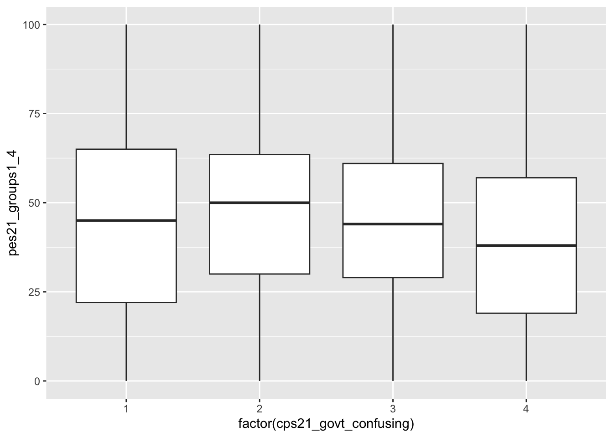
widthingeom_boxplotcontrols the width of the boxplotgeom_point(stat="summary, fun=mean)adds a point plot of the conditional mean in addition to the quartiles noted in the box and whiskers- ggplot shapes for point or scatter

ggplot(ces_dropna, aes(x=factor(cps21_govt_confusing), y=pes21_groups1_4)) +
geom_boxplot(width=0.3, fill="darkseagreen") +
geom_point(stat="summary", fun=mean, shape=23, fill="black",size=2.5) +
scale_x_discrete(labels=c("1\nStrongly Disagree","Somewhat Disagree","Somewhat Agree","4\nStrongly Agree")) +
theme_bw() +
xlab("Sometimes, politics and government seem so complicated that a person\n like me can't really understand what's going on.") +
ylab("How do you feel about the following groups in Canada\n [politicians in general]?")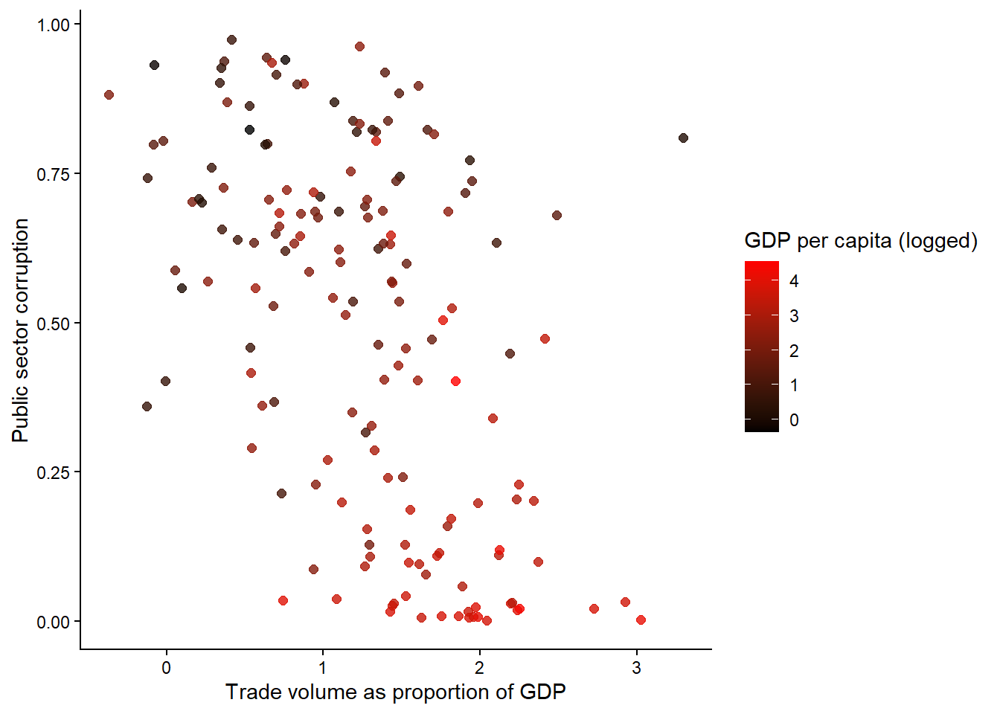
9.4 Scatter plot
Prepare variables (VDem)
vars <- c("country_name", "country_id", "year",
"e_cow_exports","e_gdppc","e_gdp","e_cow_imports","v2x_pubcorr")
vdem_selected <- read.csv("Project/VDem/VDem_post2000.csv") |>
select(all_of(vars)) |>
filter(year==2014)
df <- vdem_selected |>
mutate(trade = (e_cow_exports+e_cow_imports)/(e_gdp)) # trade volume as proportion of gdp
ggplot(data=df,aes(x=trade,y=v2x_pubcorr)) +
geom_point()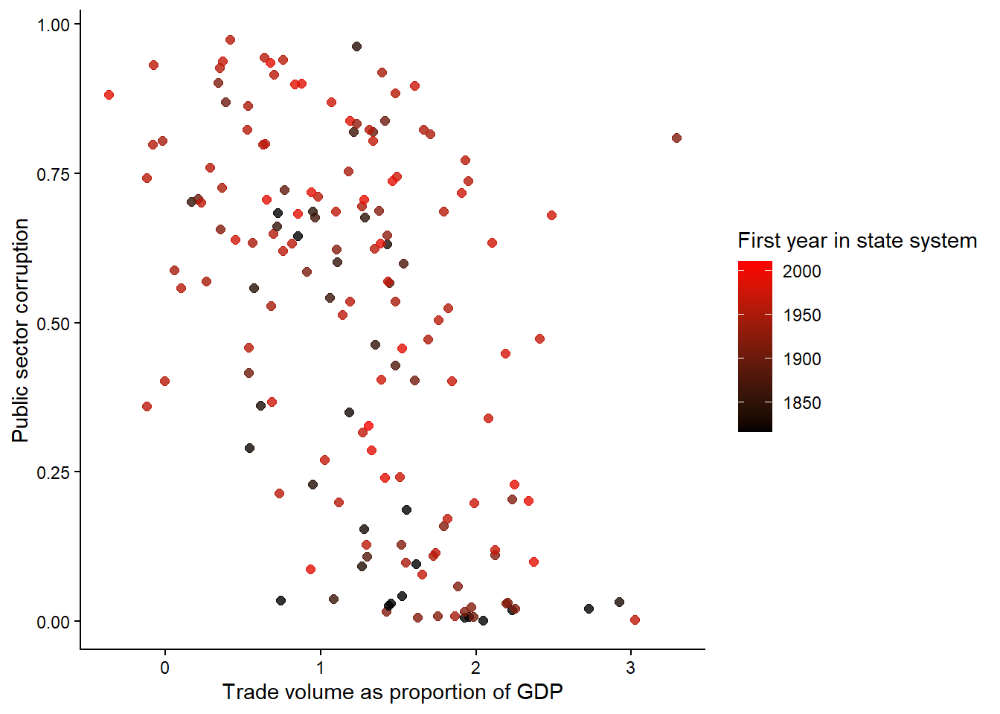
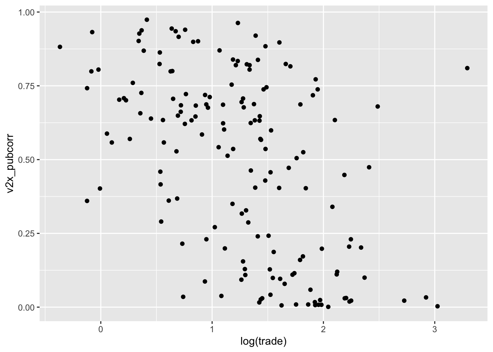
Consider including your main control variable in the bivariate plot
For example, the bivariate scatter seems to support a theory that reliance of economy on trade is associated with lower levels of public sector corruption. However, when GDP per capita is included, the plot shows that countries that rely on trade also tend to be richer. In other words, we may not have sufficient variation to disentangle the effects of trade reliance from developed economies.
ggplot(data=df,aes(x=log(trade),y=v2x_pubcorr)) +
geom_point(aes(color=log(e_gdppc)),alpha=0.8,size=2) +
theme_classic() +
xlab("Trade volume as proportion of GDP") +
ylab("Public sector corruption") +
scale_color_gradient(name="GDP per capita (logged)",
low="black",high="red")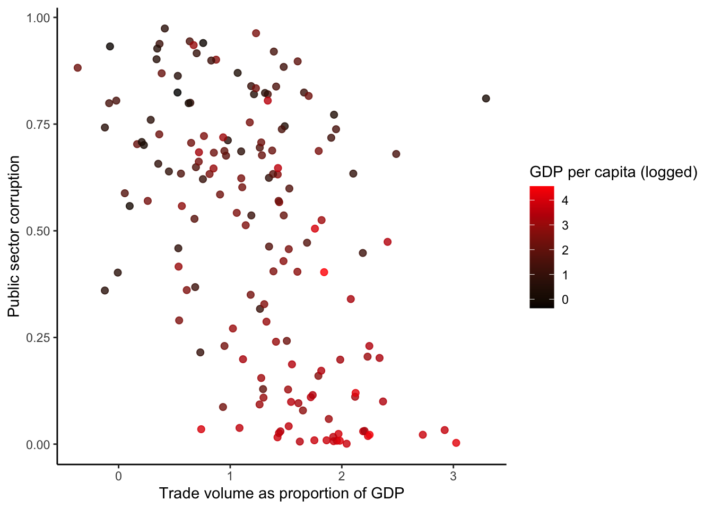
Saving plots using ggsave()
# save as object
plt <- ggplot(data=df,aes(x=log(trade),y=v2x_pubcorr)) +
geom_point(aes(color=log(e_gdppc)),alpha=0.8,size=2) +
theme_classic() +
xlab("Total trade per capita (logged)") +
ylab("Public sector corruption") +
scale_color_gradient(name="GDP per capita (logged)",
low="black",high="red")
# use ggsave()
ggsave(filename="plt.png",plot=plt)Using measures from other datasets
If you want to include data from other data sets, you must receive approval from the TAs or Prof. Besco prior to submission.
cowSL <- read.csv("data/statelist2024.csv")
library(countrycode)
cowSL$ccode_vdem <- countrycode(cowSL$ccode,
origin="cown",
destination="vdem")
cowSL2 <- cowSL |>
filter(ccode_vdem %in% vdem_selected$country_id) |>
group_by(ccode) |>
slice_min(styear) # using the earliest year for states that re-enter the system
df2 <- left_join(df,
cowSL2[,c("ccode_vdem","styear")],
by=c("country_id" = "ccode_vdem"))
ggplot(data=df2,aes(x=log(trade),y=v2x_pubcorr)) +
geom_point(aes(color=styear),alpha=0.8,size=2) +
theme_classic() +
xlab("Trade volume as proportion of GDP") +
ylab("Public sector corruption") +
scale_color_gradient(name="First year in state system",
low="black",high="red")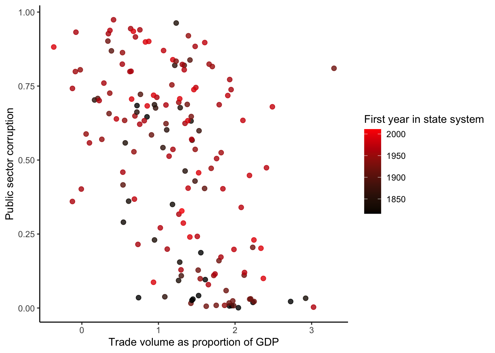